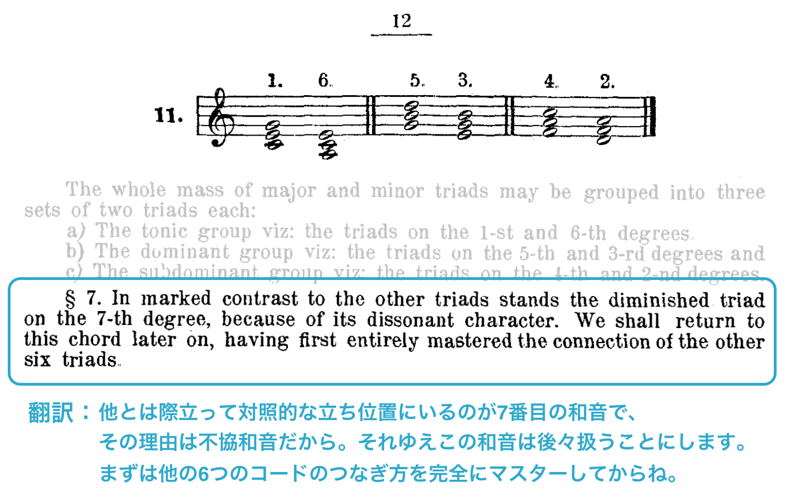

上一篇中，我们探讨了“两音组合”的极简微观世界；本篇中，我们将开始探索将3个或更多音符层层叠置的和声空间。
 1. 究竟什么是核心基础和弦
1. 究竟什么是核心基础和弦
话虽如此，正如我们在上一篇所看到的，仅仅是两音组合就存在多达132种排列。若扩展到3个音以上，可能排列的组合数量更是呈爆炸式剧增：

虽然漫无边际地随意尝试也很有趣，但先收敛聚焦、提炼出一批在实际创作中最容易上手、最核心的基础和弦展开精讲，才是通往实战作曲的最快捷径。对这些基础和弦的认识，正是迈入和弦理论的第一道大门。
顺着音阶，“隔音叠丸子”
在流行音乐中，作为作曲基石的最具代表性的音阶当属“自然大音阶（Major Scale）”。

所有声部都围绕着同一套音阶展开演奏，是最经典的音乐形态。如此一来，完全仅用这7个音构建出的和弦，自然构成了最核心的基石和弦库。反应在乐谱上，就是完全不需要任何临时升降号（变音记号）的和弦群。
三度叠置三和弦
而在音符的叠置方式上，同样存在着主流与小众之分。西方音乐最基准的经典形态，正是像“Do-Mi-Sol”这样隔一个音选一个、叠置3个音的规整串状（叠丸子）。

叠置3个音构成的和弦，直截了当地被称为三和弦（Triad）。由于是隔音叠置，音与音之间必然形成“3度”的音程间距，因此这种叠置方式被称为三度叠置（Tertian）。
音程间距适中疏朗，既不会产生严重的碰撞刺耳，又能获得清澈纯净、扎实安定的声响效果——这正是“三度叠置三和弦”历久弥坚的核心特质。
三度叠置四和弦
至于究竟叠置几个音，不同流派有着各自鲜明的审美偏好：在现代爵士乐理中，是以叠置4个音的状态作为一切理论的起跑线的：

四和弦的碰撞色彩相对更加浓郁，但正因如此，听起来往往带有一种成熟、优雅的都会高级感。由于叠置了4个音，它被称为四和弦（Tetrad / 七和弦）。爵士和声理论完全是建立在四和弦之上的，在爵士实战中四音叠置也是绝对的常态。
然而在古典乐、流行乐、摇滚乐、Techno、EDM、嘻哈等众多广袤流派中，声音干净纯粹的三和弦依然占据着无可替代的半壁江山，绝不能轻易轻视。加之四和弦的命名规则较为复杂，因此自由派音乐理论选择从最纯粹的三和弦开始起跑。
四度叠置？
如果像“Do - Fa - Si - Mi”这样按照4度的间距来叠置，声音听起来会相当特别：

这样叠置绝非什么错误。它本身是一种极具空灵美感的独特声响，尤其在现代爵士和先锋配乐中，这类非传统叠置和弦被广泛使用。
顺便举一个著名的实例：在宫崎骏经典动画《千与千寻》的主题原声《那个夏天（One Summer's Day）》中，从开篇便大量精妙地运用了四度叠置和弦。例如在 0:13 处的“Do - F♯ - Si - Mi - La - Re”，全部是纯粹的四度间距；随后的左手伴奏也连续弹奏着“Fa - Si - Mi”、“La - Re - Sol”等四度间距和弦。 在营造空灵、神秘、梦幻超脱的意境时，四度叠置简直是不二之选！但由于其生成的声响较为复杂，属于高阶进阶技巧，我们的详细讲解会留到很久以后的章节中[29]。
综上所述，叠置方式按“3度”、叠置数量选“3个”，是我们最稳健扎实的起跑线。
2. 顺阶和弦（Diatonic Chord）
当我们将条件严格收敛为：“顺应自然音阶、无临时升降号”、“按三度间距”、“叠置3个音”之后，满足全部严苛条件的和弦全天下仅仅只剩下 7个！

无论是叠3个音还是4个音，也无论按几度叠置，凡是严格遵循特定音阶中的音所构建出的和弦，统称为顺阶和弦（Diatonic Chord / 自然音阶和弦）[30]。与此相对，任何脱离该音阶构成的和弦，均统称为离调和弦 / 非顺阶和弦（Non-Diatonic Chord）。
上图所示的这7个和弦，正是绝大多数经典乐理教材开篇必讲的、整个音乐大厦最基石的顺阶和弦。
三类截然不同的声响品质
然而，这精挑细选出的7位顺阶和弦成员，在五线谱上初看全都长得整齐划一。但是，切莫被乐谱的表象所蒙蔽！正如我们在音阶篇所讲，五线谱的设计天然隐藏了真实的梯级凹凸：
既然是顺着这凹凸不平的地形叠置出的音符，那么例如“Do-Mi-Sol”与“Mi-Sol-Si”，内部各个音符之间的真实半音距离其实存在着微妙的差异。让我们重新用“包含几个半音”的客观物理标尺来透视它们：

如你所见，成员们清晰地分化为了三大阵营：以 Do、Fa、Sol 为底座的和弦属于一派；以 Re、Mi、La 为底座的和弦属于另一派；唯独以 Si 为底座的和弦，形单影只、格格不入……
Si-Re-Fa 和弦
这个孤零零被排除在外的“Si-Re-Fa（B-D-F）”和弦是一个公认的**“问题儿童”**——在全组7位成员中，唯独它散发着极其尖锐、充满焦虑不安的刺耳张力：
Si-Re-Fa 和弦
这种紧张的声响在许多现代流行流派中并不受青睐，在歌曲中的有效连接方式极其狭窄，能与它顺畅衔接的前后和弦远不如其他6个那般普适自如。正因如此，在7位成员中，唯独这第7个和弦的实用重要性断崖式下跌。
3. 六大基调和弦（Prime Chords）
7个和弦里偏偏混进了一个极难驾驭的怪胎。这对于初学者来说无疑平添了巨大的认知干扰。 因此，自由派音乐理论做出了一个极具实战智慧的决断：在接下来的整个入门基石阶段，暂时将这第7个和弦剥离封印，将全部精力100%聚焦在剩下的6个黄金和弦上！

我们将在第III章进阶时再与这位第7号成员重聚。对于制作朋克、EDM、嘻哈等风格的创作者而言，即便在第I章和第II章完全不涉及该和弦，也丝毫不会对创作带来任何阻碍。
事实上，仅仅拿掉这1个特殊和弦，整个理论体系瞬间变得无比清爽精炼！这种将和弦收敛为6个核心基石的教学策略，在古典大师的教学史上早有深厚先例。例如伟大作曲家柴可夫斯基（Tchaikovsky）当年在音乐学院执教时所编写的和声学教材，便采用了完全相同的编排逻辑：

Tchaikovsky, Pyotr. “Guide to the Practical Study of Harmony” (p.12).卸下死记硬背的沉重包袱，优先直击实战中最核心高频的精髓——这才是最科学高效的学习之道。
确立专属概念：基调和弦（Prime Chords）
然而在市面上的通用乐理中，只有涵盖全部7个和弦的“顺阶和弦”大杂烩概念，缺乏一个专门指代这6大主力成员的专属词汇。为了彻底扫清教学沟通障碍，自由派音乐理论将这6个核心和弦郑重命名为——基调和弦（Prime Chords）。
基调和弦 (Prime Chords) : 指在某一调性中，基于自然音阶（无临时升降号）、以三度叠置方式构建出的最核心基础的6个和弦群。 : 基调和弦之外的所有和弦统称为“基调外和弦”。所谓“最核心基础”，是指其物理声响属于前文所述的类型1或类型2。即使叠置为四和弦（七和弦），其本质依然属于基调和弦的范畴。
仅仅依靠这6个基调和弦创作出的世界级传世名曲数不胜数。在键盘或吉他上作曲时，只要将这6个和弦随心所欲地串联流动，就能瞬间编织出无比动听且自洽的完整“和弦进行”：
正如我们在绪论中所强调的：和弦进行的那些所谓“禁则”，充其量只是某些历史流派的局限行规而已，现代创作中完全无需为之束手束脚。在第I章后半部分，我们将系统拆解各类和弦进行套路；在此之前，大家多动手随心弹奏体验不同的走向，无论对实战积累还是后续理解都将大有裨益。
至此，一切豁然开朗：只需顺着音阶隔音叠置，便能立刻将整首歌曲的基石和弦收入囊中。这也呼应了我们上一课的承诺：既然只需顺应音阶排布，大家在现阶段完全不需要为硬背复杂晦涩的“精确度数”而犯难！
理论与感性
当然，这绝不意味着初学者在作曲时“只能被禁锢在这6个和弦里”。我们原本就拥有无需任何乐理许可、在任何时刻自由使用世间任何和弦的绝对权利！我们提炼这6大基调和弦，只是为了在过于辽阔的音乐大海中为大家点亮一座清晰的方向标而已。
因此在实际写歌时，如果你凭借直觉按出了这6个之外的和弦且觉得动听美妙，请务必大胆、自豪地用下去！因为在后续深入的乐理进阶中，你十有八九会与它重逢，而“天哪……这正是我之前写歌用过的那声叹息！原来它在理论上叫这个名字！”的顿悟快感，正是乐理进阶中最美妙的享受。
同时，由于爵士乐以4个音的“四和弦”为基准，如果你想创作爵士色彩浓郁的曲风，完全可以大胆尝试将基调和弦叠置为四和弦（大七、小七和弦）。你会惊喜地发现，纯正高级的都会爵士声响唾手可得。
未被理论框架覆盖的盲区，绝非“尚不可踏足的禁区”，而是**“虽尚未从理论上分类，但凭借感性完全可以放手去探索的肥沃土壤”**。很多人一学乐理往往就丧失了起初最纯粹自由的直觉，请务必时刻警惕这种教条化陷阱。
现在，我们的视线已经高度清晰聚焦。接下来需要全面揭秘的，正是这6大和弦内部所分化出的两大核心阵营：

“类型1”与“类型2”完美地呈现出 3:3 的对称分立。类型不同，声响究竟有何质的飞跃？它们各自被赋予了怎样的正规学名——我们即刻跨入“和弦名称（Chord Names）”的精彩天地！
总结
- 和弦的物理形态千变万化，但“遵循调式音阶”、“以三度为间距”、“叠置3个或4个音”构成了现代作曲的核心基石。
- 在调式内完全顺应音阶、按三度叠置构建的和弦统称为“顺阶和弦（Diatonic Chords）”。
- 自由派音乐理论提炼出排除第7级减和弦后的6大主力成员，以“基调和弦（Prime Chords）”作为基石全面展开实战理论构架。